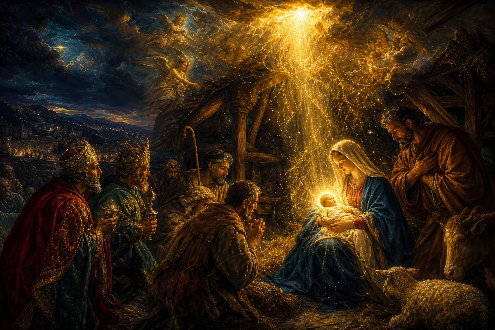

New Testament · Book 4 of 27
John
A single candle held up to eternity — written so you would believe, and believing, live.
Three other Gospels tell you what Jesus did. John tells you who He is.
In the beginning was the Word — and John writes as if he is still catching his breath from having seen Him.
What happens in John
Where Matthew, Mark, and Luke move chronologically through Jesus's life, John circles back again and again to a single question: who is this man, really? He answers it before the story even starts — with a poem declaring that the Word who made the universe became flesh and moved into the neighbourhood. From there, John selects seven unmistakable signs: water turned to wine, a blind man given sight, a dead friend called back out of a tomb. Each miracle is paired with a claim so bold it borders on scandal: "I am the bread of life," "I am the light of the world," "I am the resurrection and the life." The back half of the book slows to a crawl for one long night — a final meal, a washing of feet, a prayer so intimate it feels intercepted — before the cross, and then a garden tomb standing open at dawn.
Why it matters
John tells you exactly why he wrote it: "these are written, that ye might believe." Every image, every "I am," every long private conversation is aimed at one outcome — not just information about Jesus, but a relationship with Him. It is often the first Gospel handed to someone who has never read the Bible, because it was written, quite deliberately, to be a front door.
Jump to a chapter
John has 21 chapters — select one to begin reading there.